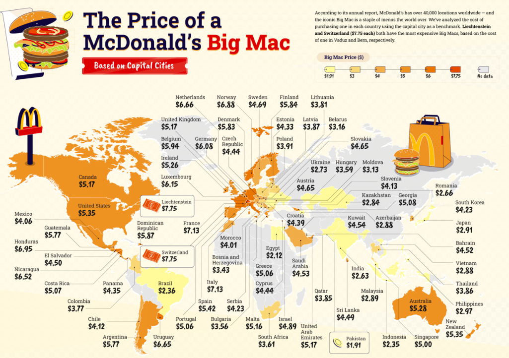
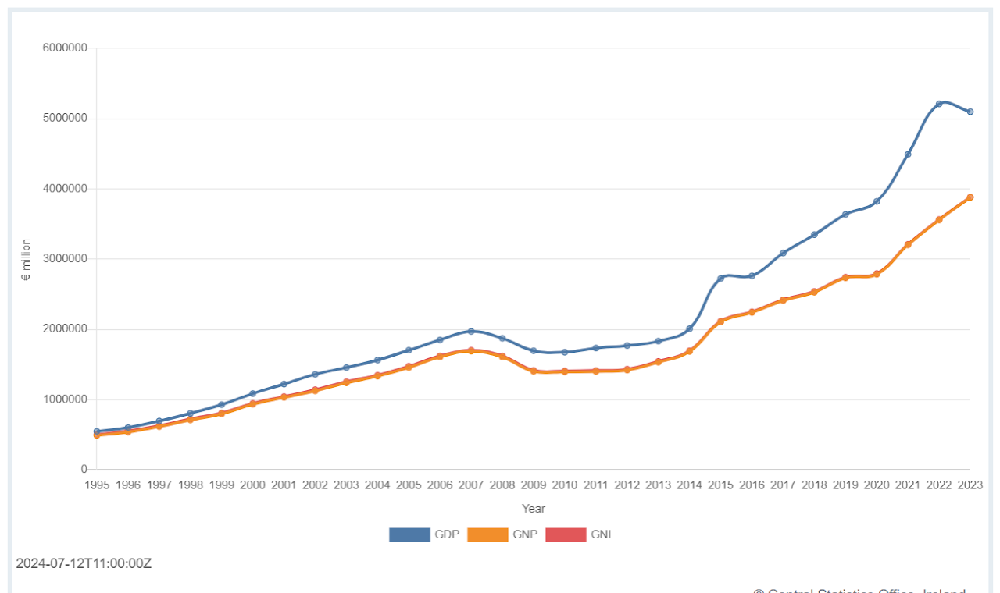
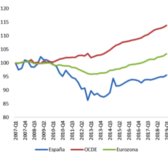
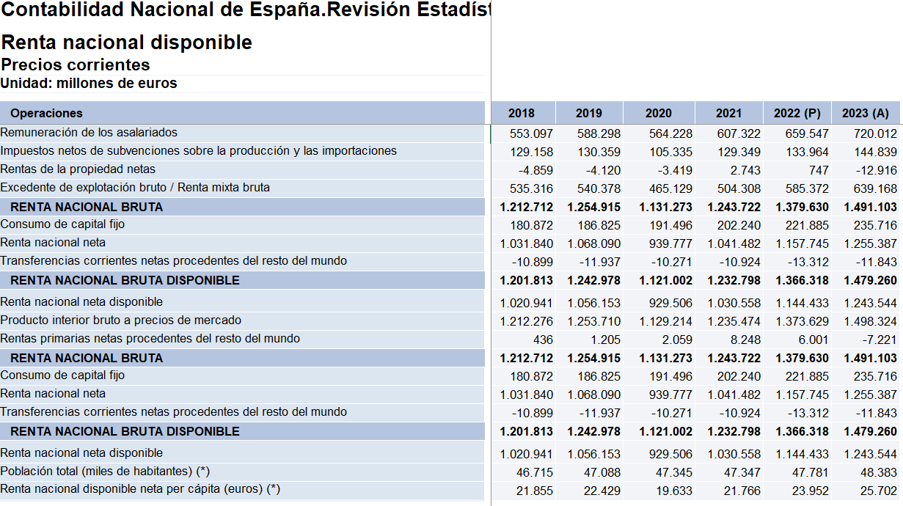
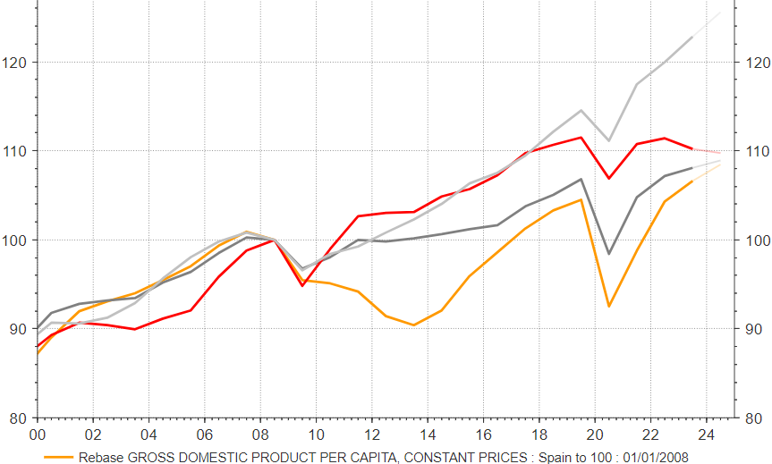
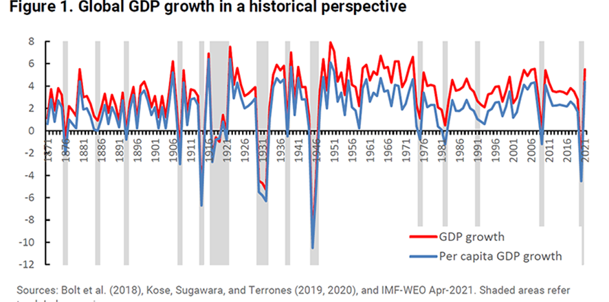
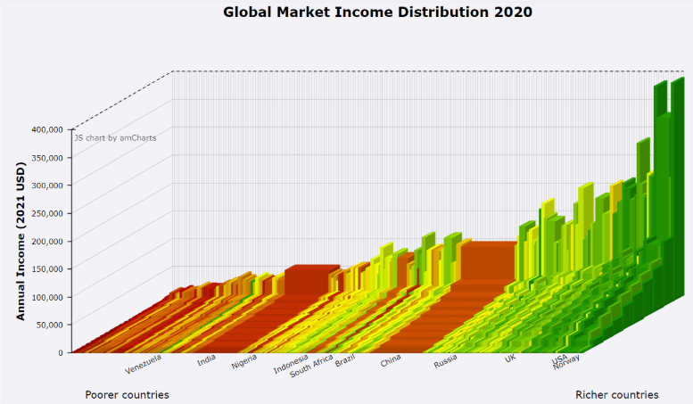
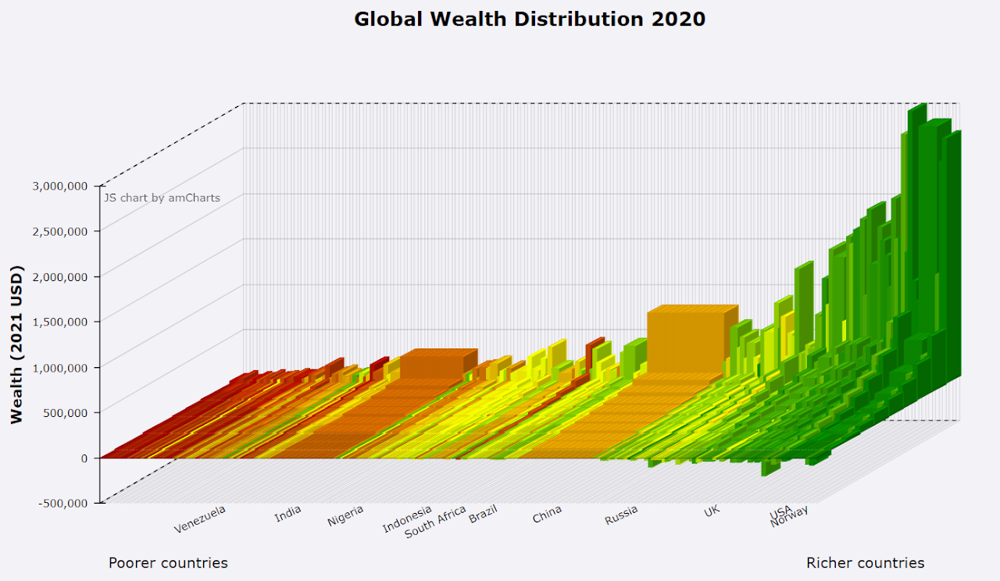
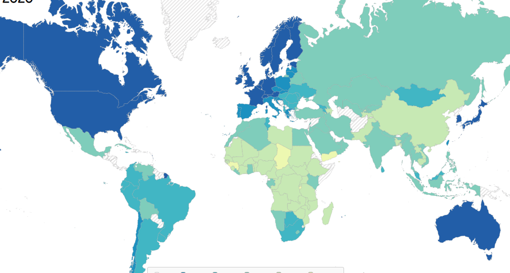

1.1 National Accounts
Theory
Gross Domestic Product (GDP) is the total monetary or market value/prices of all the finished goods and services (final G&S) produced within a country's borders in a specific time period.
3 valuation criteria:
• Basic Prices: The basic price of a product represents the value at which it leaves the economic unit that produces it, including taxes and subsidies related to production. It is equivalent to the sum of factor remuneration and other net production taxes (taxes minus subsidies). If these taxes/subsidies were excluded, the valuation would revert to the outdated concept of "factor cost", which is no longer used in current accounting standards.
• Producer prices: values at basic prices plus the taxes (net of subsidies) on products and imports, with the exception of VAT. It corresponds to the old ex-factory price valuation criterion.
• Acquisition prices / market prices: prices paid by consumers.
GDP – Three approaches: Sum of Spending, Factor Incomes or Output
GNP = GDP + NPI
NNP = GNP – FCC
GNP = GNI
NNP = NNI
NNDI = NNP + NT
GDP = GNP - NPI = NNP + FCC – NPI = NNI + FCC – NPI = NNDI - NT + FCC – NPI
NNDI = GDP + NT - FCC + NPI
GNDI = GDP + NT + NPI
RNBD Disposable Net Domestic Rents – Final consumption = Gross Domestic Savings
GNDI = GNS + FCE NNPMP - Taxes + subsides = NNPfc = National income
GDPMP – CCF= NDPMP
GNPMP – CCF = NNPMP A developing country: GDP usually greater than GNP
GDP per cápita = GDP / Population
Productivity = GDP / Workers
Gross national product (GNP) is an estimate of total value of all the final products and services turned out in a given period by the means of production owned by a country's residents.
Comment: flow variable (is measured with reference to a period of time) and stock variable (particular point of time) variables.
Growth meassures
Growth Rate Formula
The growth rate of \(V_t\) is given by:
Compound Growth Rate Formula
The \(Compound\ Growth\ Rate\ (CGR)\) is calculated using the formula:
The Rule of 70: Doubling Time
The \(Rule\ of\ 70\) estimates the number of years required for a quantity to double, given a constant growth rate:
Example Calculation
If an economy grows at 5% per year, the time it takes to double is:
Index Number Formula
The \(Index\ Number\) is calculated using the formula:
Deflator Formula
The Deflator is calculated using the formula:
Explanation
- \(Nominal\ Value\) = measured at current prices.
- \(Real\ Value\) = measured at constant prices.
Exchange Rate Formula
The \(Exchange\ Rate\) represents the amount of national currency required to obtain \(one\ unit\) of a foreign currency:
Explanation
- \(Units\ of\ National\ Currency\) = the amount of local currency needed.
- \(One\ Unit\ of\ Foreign\ Currency\) = the reference foreign currency (e.g., 1 USD, 1 EUR).
Example Calculation
If 1 USD is equal to 20 Mexican Pesos (MXN), then:
This means 1 USD is worth 20 MXN.






Interventions in exchange rate markets.
Depreciation: A currency loses value relative to a foreign currency. This means more units of the national currency are needed to purchase one unit of the foreign currency. Appreciation: A currency gains value relative to a foreign currency. This means fewer units of the national currency are needed to purchase one unit of the foreign currency. Devaluation & Revaluation for fixed exchange regimenes
PPP Developing countries use to have “cheaper” noncommercial services. Comparisons with exchange rate tend to underestimate the purchasing power capacity ➡️Purchasing Power Parity – Big Mac Index.
Efective exchange rate (nominal & real): weighted average of the bilateral exchange rates between the home country and its major trading partners.
Effective exchange rates - data | BIS Data Portal https://data.bis.org/topics/EER/data?pdqId=BIS%2CPDQ_I2_B%2C1.0&data_view=table&filter=FREQ%3DM%255EEER_BASKET%3DB%255EEER_TYPE%3DR%255ELAST_N_PERIODS%3D10&rows=REF_AREA&cols=TIME_PERIOD&settings=asc%7Cdesc%7Cname
Alternative meassures of economic activity
Limitations of the GDP measure:
1.- Effects on stock variables (e.g. deforestation, petrol stocks...)
2.- Type of production (education vs. military spending or hospitals vs. crime)
3.- Environmental costs Negative externalities (pollution)
4.- Production for the market only: informal economy
5.- Distribution problems
6.- Measurement vs. reality (statistical discrepancies)
Index of Sustainable Economic Welfare / Índice de bienestar económico sostenible
-
Better life index https://stats.oecd.org/Index.aspx?DataSetCode=BLI
Inequality


Visualizing global income inequality Visualizing global wealth inequality
